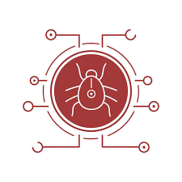

Todos los virus tienen una carga útil, que es la que ejecuta la acción.
Un hacker puede codificar cualquier tipo de actividad malintencionada en la carga útil del virus, incluyendo bromas sencillas e inocuas que no causan daño alguno.
Si bien algunos virus tienen cargas útiles inofensivas, la mayoría de ellos causan daños al sistema y a sus datos.
Existen nueve clases principales de virus, algunos de las cuales podrían estar repletos de otro malware para incrementar
las oportunidades de infección y de daño. Los principales tipos de virus informáticos son:

Virus de sector de arranque
El disco duro de su ordenador tiene un sector cuyo único propósito es orientar al sistema operativo, para que este pueda iniciar la interfaz.
Un virus de sector de arranque daña o controla el sector de arranque del disco, inutilizando al equipo. Los atacantes suelen diseminar este
tipo de virus mediante un dispositivo USB malintencionado. El virus se activa cuando los usuarios conectan el dispositivo USB y arrancan su equipo
Virus de script La mayoría de los navegadores tienen defensas contra los scripts malintencionados, pero los navegadores más antiguos u obsoletos tienen vulnerabilidades que pueden permitir a un delincuente cibernético ejecutar código en el dispositivo local.
Secuestrador del navegador
Hay virus que pueden cambiar la configuración de su navegador y funcionan secuestrando los enlaces favoritos de su navegador,
la URL de la página de inicio y sus preferencias de búsqueda, para redirigirle a una página malintencionada. La web podría
ser una web de phishing o de adware usada para robar datos o para ganar dinero por parte del atacante.
Virus residentes
Estos virus residentes se incrustan en la memoria del ordenador y permanecen ocultos hasta ser activados. Este malware
puede permanecer en hibernación hasta una fecha u hora específicas, o hasta que un usuario ejecuta una cierta acción.
Virus de acción directa
Cuando un usuario ejecuta un archivo aparentemente inocuo pero que en realidad contiene código malintencionado,
los virus despliegan su carga útil de inmediato. Estos tipos de virus pueden permanecer suspendidos hasta que se toma
una acción específica o transcurra un cierto período de tiempo.
Virus polimórfico
Los virus polimórficos les dificultan a los antivirus el detectarlos y eliminarlos.
Los creadores del malware pueden usar código polimórfico para cambiar la huella del programa y así evitar su detección.
Virus que infecta archivos
Para persistir en un sistema, el autor de la amenaza emplea virus inyectores con código malintencionado para infectar
archivos clave que ejecutan el sistema operativo o programas importantes. Cuando el sistema arranca o se ejecuta el programa, el virus se activa.
Virus multipartitos
Estos programas malintencionados se diseminan por las redes de otros sistemas, bien copiándose a sí mismos o inyectando
código en recursos informáticos esenciales.
Virus de macros
Los archivos de Microsoft Office pueden ejecutar macros, y estas macros se pueden usar para descargar malware adicional o
ejecutar código malintencionado. Los virus macro despliegan su carga útil cuando se abre el archivo y se ejecutan los macros.
Historia de los virus